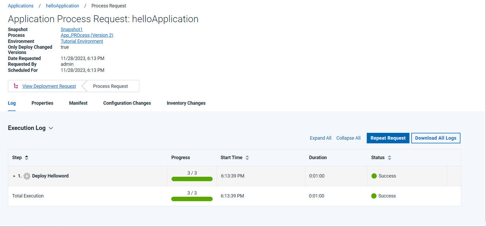

Running the same process again
The repeat request function is available after an application deployment completes. The Repeat Request feature is on the Process Request page for the application.
About this task

It repeats the same deployment that was previously requested, including the selected versions. Repeating a previous deployment might result in receiving an Already Installed message. When an application process step completes successfully, it is tagged with a version number. If a process does not complete successfully, it remains at the same version. Therefore, starting a repeat request function where some processes completed successfully and which some failed, a mixture of updated versions and remaining versions exist.
During the deployment process, the inventory of resources is verified. The resource version is compared to the requested deployment version. If the resource was successful in the previous build, the Already Installed message is displayed because the resource was successfully installed during the previous deployment process and it is not installed again.
Eliminating the Already Installed message, depends on how the request process is defined. For example, when a failed installation process results in mixed versions, you can manage environment inventory manually and remove artifacts for failed resources.
To start the deployment process without using the repeat request feature, start the request in the same manner as before and clear the Only changed versions options. Using this option causes the inventory check to be bypassed.